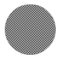

Shape tweening


 Downloadable FLA
Downloadable FLA
Shape tweening is a cool feature, if you use it correctly. This is how to use it.
Step 1. Create a start keyframe.
Step 2. Draw the contents of what you want to tween. The following is allowed:
Step 3. Create an ending keyframe, for what you want the previous content to tween into. The same is possible...
Step 4. Make sure the content of the first and the last frame is "broken". (When you select it, it becomes filled with small squares).

NOTE: It is important that you "convert" the object into a shape. This is done, by selecting the shape, and pressing CTRL + B. This is the most common shape tweening problem. If you're having problems tweening a font, select it, and break it up.
Step 5. Click properties for the space between the first and the last keyframe.
Step 6. Select "Shape tweening".
Step 7. Distributive is best for round shapes, Angular is best for shapes with many corners.
Voila!